The free, comprehensive way to prepare for Swiss naturalization.


Why this app
A look inside

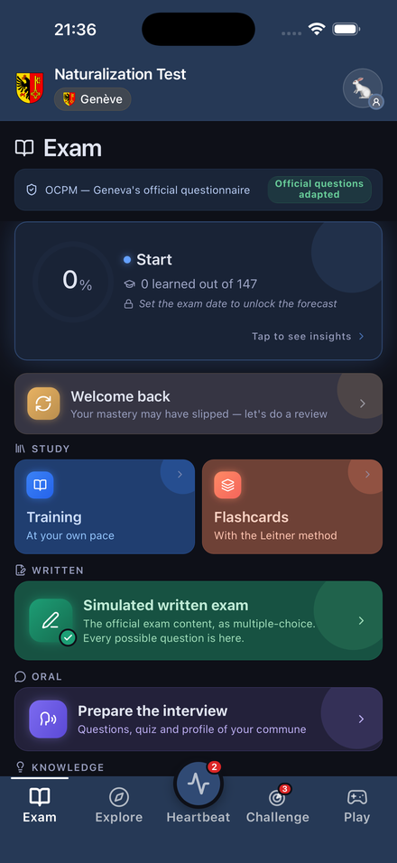
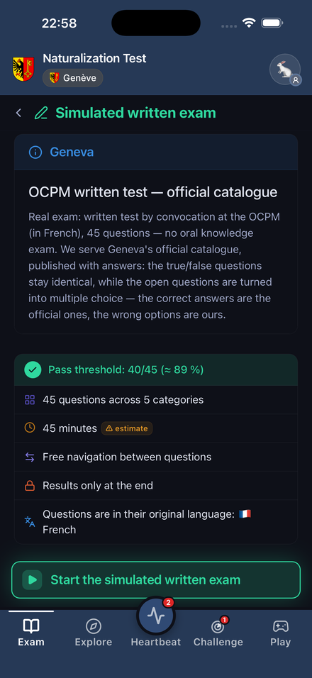


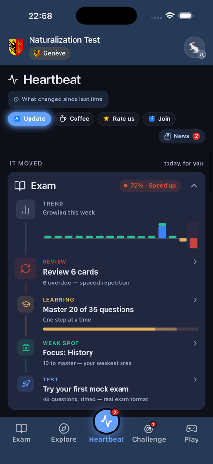

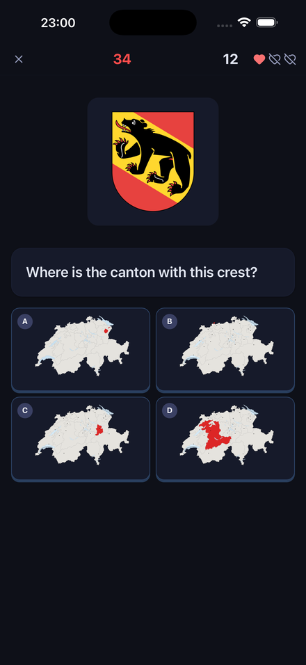

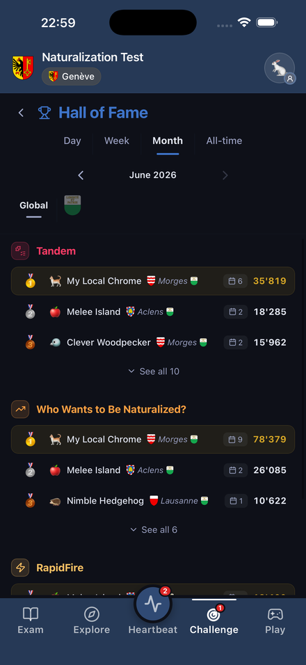
Featured in

Claim it commune by commune: break through the district gates, win the timed assaults, become Mayor. A playful way to master local knowledge. Live in Vaud and its neighbouring cantons — more coming.
La façon gratuite et complète de préparer votre naturalisation suisse.

Pourquoi cette app
Aperçu

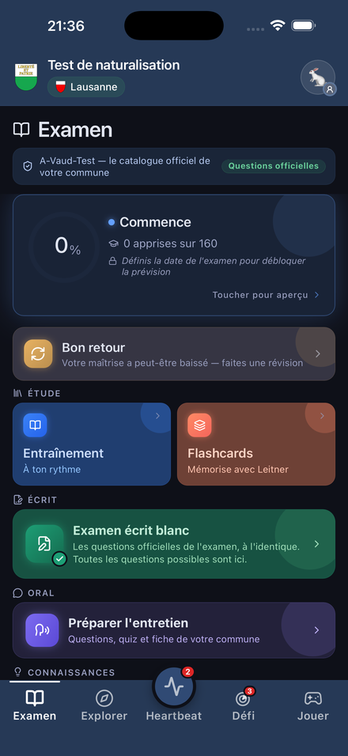
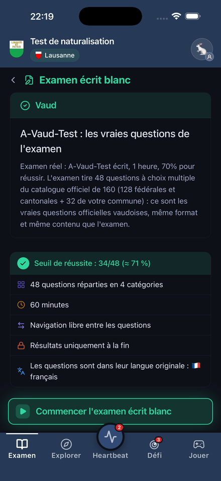


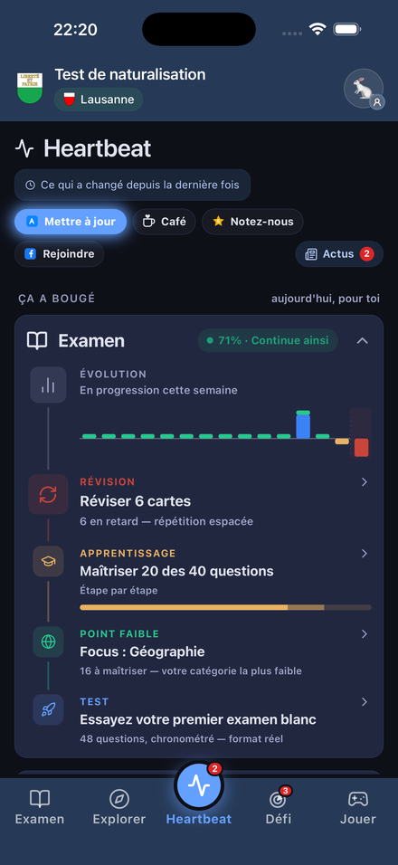

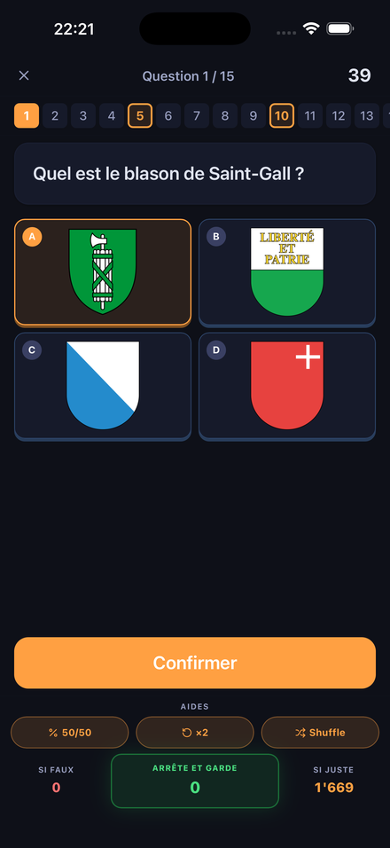

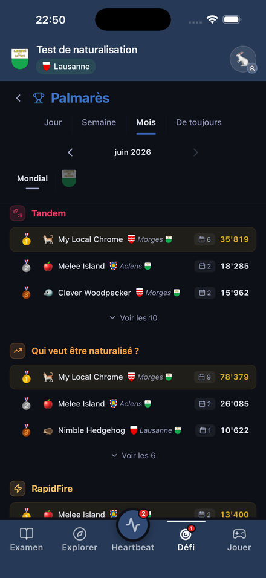
Ils en parlent
Conquiers-le commune par commune : franchis les portes des districts, gagne les assauts chronométrés, deviens Maire. Une façon ludique de maîtriser les connaissances locales. Déjà dans le canton de Vaud et ses voisins — d'autres arrivent.
Der kostenlose, umfassende Weg zur Vorbereitung auf Ihre Schweizer Einbürgerung.

Warum diese App
Ein Blick hinein

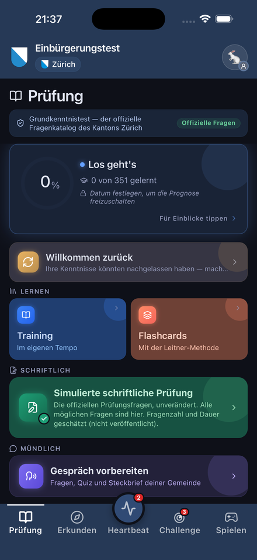


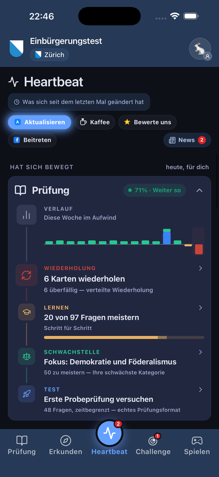

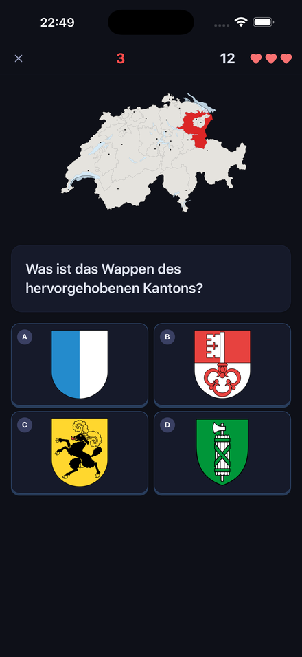

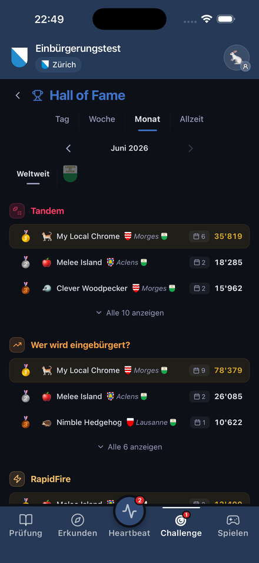
Bekannt aus
Erobere ihn Gemeinde für Gemeinde: durchbrich die Bezirks-Tore, gewinne die Zeitangriffe, werde Stadtpräsident:in. Eine spielerische Art, lokales Wissen zu meistern. Schon in der Waadt und ihren Nachbarkantonen — weitere folgen.
Il modo gratuito e completo per prepararti alla naturalizzazione svizzera.

Perché questa app
Uno sguardo dentro

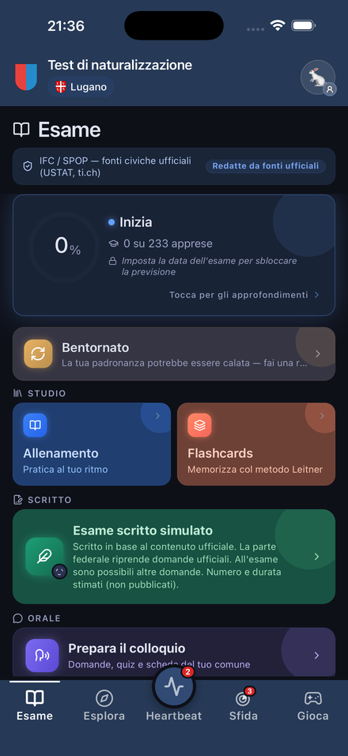
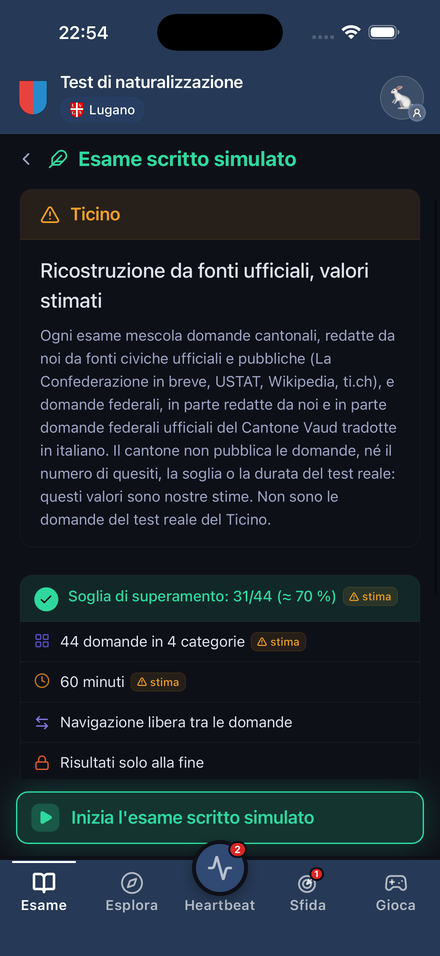


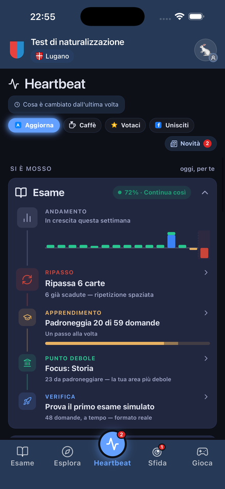

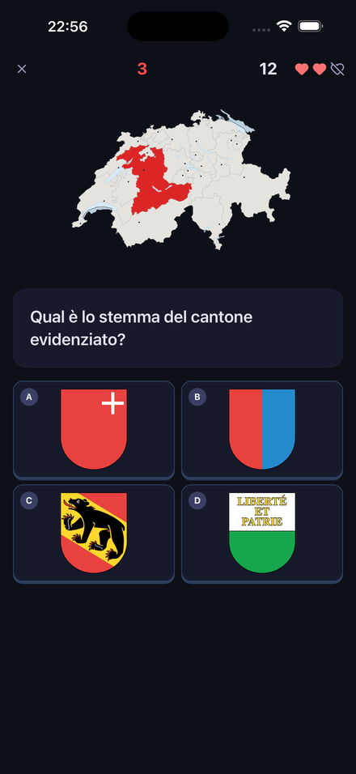

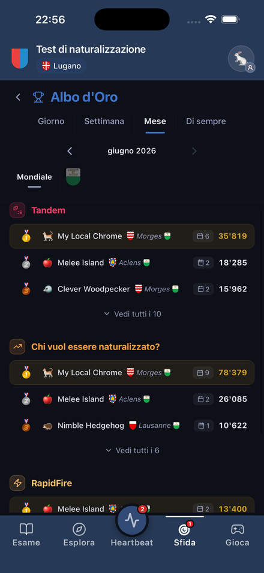
Ne hanno parlato
Conquistalo comune per comune: sfonda i gate dei distretti, vinci gli assalti a tempo, diventa Sindaco. Un modo giocoso di padroneggiare le conoscenze locali. Già nel Canton Vaud e nei suoi vicini — altri in arrivo.